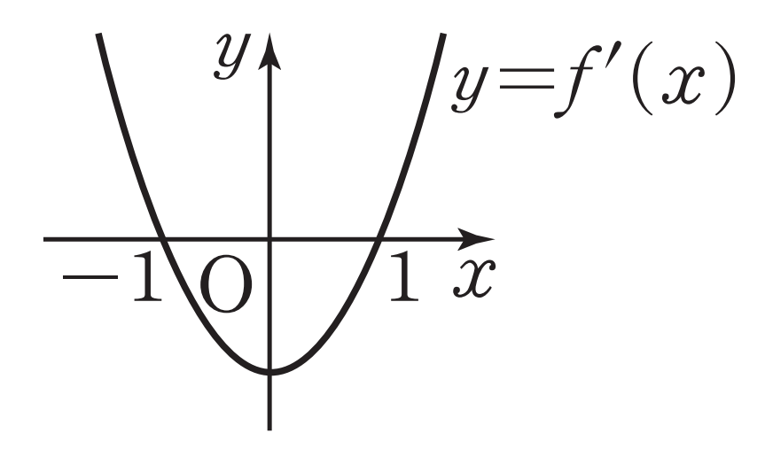
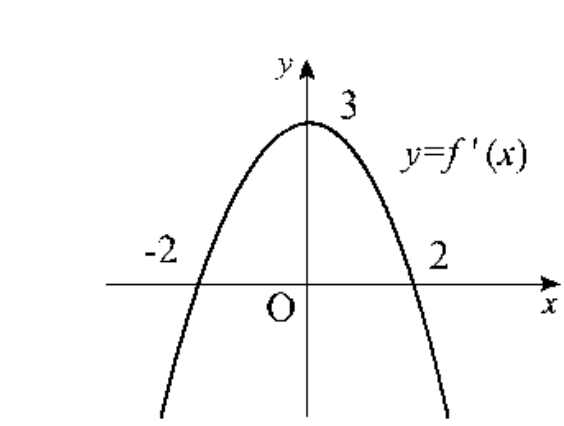

2026학년도 2학기 | 미적분 I
차시 14·15에서 우리는 증감표를 통해 도함수 부호 변화와 극값을 잡았다. 하지만 같은 증감 정보만 가지고도 그래프의 "높낮이"는 무한히 많다. 오늘은 증감과 극값에 좌표축과의 교점까지 더해 그래프 개형을 한 번에 결정하는 5단계 알고리즘을 배운다.
[개방형 발문] 두 학생의 대화: "도함수 \(y = f'(x)\)의 그래프가 \(x = -1,\ 1\)에서 \(x\)축을 가로지른다는 사실만 알아도 함수 \(y = f(x)\)의 그래프 모양은 하나로 정해질까?" 정해지지 않는다면, 무엇을 더 알아야 그래프 개형이 결정되는지 추측해 보자. (비상 미적분 I P.86 · 개념 탐구 참고)
[연결] 차시 14의 증감 + 차시 15의 극값만으로는 그래프가 평행이동된 채로 무수히 많다. 본 차시는 거기에 \(x\)절편·\(y\)절편(좌표축과의 교점)과 극값의 \(y\)좌표를 추가해 그래프 개형을 하나로 결정하는 5단계 표준 절차를 익힌다. 이는 차시 18(방정식의 실근 개수), 차시 19(운동 그래프 해석)의 기초 무기가 된다. (비상 미적분 I P.86 · 그래프의 개형 도입 참고)
미분가능한 함수 \(y = f(x)\)의 그래프의 개형은 다음 순서로 그린다.
핵심: 1·2·3단계는 차시 14·15에서 완성한 도구. 4단계의 \(x\)절편(\(f(x) = 0\)의 실근)과 \(y\)절편(\(f(0)\))이 그래프의 "위치"를 결정한다. 즉 차시 16의 새 도구는 "좌표축과의 교점" 한 가지뿐이다. (비상 미적분 I P.86 · 5단계 알고리즘 참고)
5단계를 한 번 완주해 보자.
STEP 1·2: \(f'(x) = 6x^2 - 6 = 6(x+1)(x-1)\). \(f'(x) = 0 \Rightarrow x = -1\) 또는 \(x = 1\).
STEP 3 (증감표):
| \(x\) | \(\cdots\) | \(-1\) | \(\cdots\) | \(1\) | \(\cdots\) |
|---|---|---|---|---|---|
| \(f'(x)\) | \(+\) | \(0\) | \(-\) | \(0\) | \(+\) |
| \(f(x)\) | ↗ | \(5\) | ↘ | \(-3\) | ↗ |
STEP 4: \(y\)절편 \(f(0) = \) \(1\). 극댓값 \(f(-1) = 5\), 극솟값 \(f(1) = -3\). (3차 함수이므로 \(x\)절편은 1~3개, 정확한 값은 인수분해 어려움 — 개형엔 영향 없음.)
STEP 5: 좌하단에서 올라와 \((-1, 5)\) 극대 \(\to\) 내려가 \(y\)축 \(1\) 지나 \((1, -3)\) 극소 \(\to\) 우상으로 올라가는 모양.
주목: 삼차함수 그래프는 항상 좌→하 / 우→상 (양의 최고차) 또는 좌→상 / 우→하 (음의 최고차) 양 끝 방향이 정해진다. 가운데에 극값이 0개 또는 2개. (비상 미적분 I P.86~87 · 예제 1 참고)
사차함수는 극값 패턴이 더 풍부하다.
STEP 1·2: \(f'(x) = 4x^3 + 12x^2 + 8x = 4x(x+2)(x+1)\). \(f'(x) = 0 \Rightarrow x = -2,\ -1,\ 0\).
STEP 3 (증감표):
| \(x\) | \(\cdots\) | \(-2\) | \(\cdots\) | \(-1\) | \(\cdots\) | \(0\) | \(\cdots\) |
|---|---|---|---|---|---|---|---|
| \(f'(x)\) | \(-\) | \(0\) | \(+\) | \(0\) | \(-\) | \(0\) | \(+\) |
| \(f(x)\) | ↘ | \(-1\) | ↗ | \(0\) | ↘ | \(-1\) | ↗ |
STEP 4: 극솟값 \(f(-2) = \) \(-1\), 극댓값 \(f(-1) = 0\), 극솟값 \(f(0) = \) \(-1\). \(y\)절편 \(f(0) = -1\).
STEP 5: 양끝 모두 \(+\infty\)로 올라가며 \(W\) 모양. 두 극솟값이 같아 그래프는 \(x = -\dfrac{3}{2}\)을 기준으로 거의 대칭처럼 보인다.
핵심: 사차함수(최고차 \(+\))의 양끝은 \(+\infty\). 가운데 극값은 1개(\(\cup\) 모양) 또는 3개(\(W\) 모양 — 극소·극대·극소). 극값 3개의 경우 두 극솟값의 비교가 형성평가·도전의 핵심 포인트. (비상 미적분 I P.87 · 예제 2 참고)
개형이 결정되면 다음 3가지를 즉시 읽을 수 있어야 한다.
예시: 위 예제 \(y = 2x^3 - 6x + 1\)에서 극댓값 \(5 \gt 0\), 극솟값 \(-3 \lt 0\). 따라서 \(x\)축과 세 점에서 교차 \(\Rightarrow\) 방정식 \(2x^3 - 6x + 1 = 0\)은 서로 다른 세 실근. 이것이 차시 18에서 본격적으로 쓰일 핵심 추론. (비상 미적분 I P.87 · 그래프 개형의 함의 참고)
5단계 알고리즘으로 그래프 개형 그리기
도함수 그래프 \(\to\) 원함수 개형, 매개변수 결정

"틀려야 는다!" 극값 0개·1개·3개 분류 — 사차함수의 함정
"사차함수면 \(W\) 모양 (극값 3개)"이라는 고정관념을 깨는 차시 16의 핵심 함정.
STEP 1 — 도함수 분석: \(f'(x) = 4x^3 + 2ax = 2x(2x^2 + a)\). \(f'(x) = 0 \Rightarrow x = 0\) 또는 \(2x^2 + a = 0\), 즉 \(x^2 = -\dfrac{a}{2}\).
STEP 2 — 경우 분류:
① \(a \geq 0\): \(x^2 = -\dfrac{a}{2} \leq 0 \Rightarrow\) 해 없음(\(a = 0\)은 중근). \(f'(x) = 0\)인 실수는 \(x = 0\) 단 하나. 부호: \(x \lt 0\)에서 \(2x \lt 0\), \(2x^2 + a \gt 0\) \(\Rightarrow f' \lt 0\). \(x \gt 0\)에서 \(f' \gt 0\). 즉 부호 \((-,+)\) \(\Rightarrow\) \(x = 0\)에서 극소만 (극값 1개, \(\cup\) 모양).
② \(a \lt 0\): \(x^2 = -\dfrac{a}{2} \gt 0 \Rightarrow x = \pm\sqrt{-\dfrac{a}{2}}\). 세 점 \(x = -\sqrt{-\dfrac{a}{2}},\ 0,\ \sqrt{-\dfrac{a}{2}}\). 부호 \((-,+,-,+)\) \(\Rightarrow\) 극소·극대·극소 3개 (\(W\) 모양).
STEP 3 — 정답:
(1) 극값 1개 \(\Leftrightarrow a \geq 0\) (\(b\)는 \(y\)절편이므로 개형엔 무영향).
(2) 극값 3개 \(\Leftrightarrow a \lt 0\).
핵심 통찰: 사차함수 \(y = x^4 + ax^2 + b\)는 짝수 차수의 대칭형. 도함수가 인수분해될 때 "\(2x^2 + a = 0\)에 해가 있는가"가 극값 개수의 분기점. 단순히 "사차함수 = \(W\) 모양"이라는 도식적 사고를 버려야 한다. 일반적인 사차함수도 항상 극솟값 1개 or 극소·극대·극소 3개 두 패턴 중 하나. 극값 2개나 0개인 사차함수(최고차 양수)는 존재하지 않는다는 정리도 함께 이해해야 한다 — \(f'\)이 3차이므로 실근이 1개 or 3개(중근 포함 시 부호 패턴이 1개와 동치).
📖 출처: 수능특강 수학Ⅱ · 도함수의 활용 2 · 유제 2 [26009-0100]
난이도 ★★★ (학습지 max+2, 7분) · 핵심: 절댓값 포함 함수의 분기 + 닫힌구간에서의 최대·최소 — 구간을 \(x\lt -1\), \(x\geq -1\)로 나눠 각각 미분 후 양 끝값·극값·접점값 모두 비교
핵심: 절댓값이 끼어 있는 함수의 최대·최소는 ① 절댓값 분기점을 기준으로 구간을 나눠 부분 함수를 명시 ② 각 부분에서 미분으로 임계점 탐색 ③ 분기점에서의 좌우 함숫값 일치 확인(연속성) ④ 닫힌구간 양 끝값·분기점값·내부 임계점값을 모두 비교. 차시 16 시나리오의 절댓값·그래프 분석 패턴이 평가원형으로 어떻게 결합되는지 보여주는 정통 사례.
📖 출처: 2004년 10월 학력평가 수학영역 가형 6번 [3점]
난이도 ★★★ (학습지 max+2, 7분) · 핵심: 도함수 \(f'(x)\)의 그래프 \(\to\) 원함수 \(f(x)\)의 식 복원 \(\to\) 방정식 \(f(x) = kx\)의 실근 개수 (그래프 + 직선 교점 분석)

① \(k \gt 2\) ② \(k \gt 3\) ③ \(k \lt 3\)
④ \(-4 \lt k \lt 4\) ⑤ \(k \lt -2\) 또는 \(k \gt 2\)
핵심: "도함수 그래프 \(\to\) 원함수 복원" 사고가 차시 16의 핵심. ①\(f'\)의 식을 정확히 읽고 ②적분상수를 초기조건으로 결정 ③원함수를 이용해 방정식 해석. 이는 차시 18(방정식·부등식 활용)의 핵심 전제 — 도함수가 보여주는 정보(극값·증감)로부터 원함수 그래프 개형을 추론하고 \(y = k\) 또는 \(y = kx\)와의 교점 개수를 통제한다.
스마트폰으로 우측 QR코드를 스캔하여, 아래 3가지 유형 중 하나 이상을 체크하고 통합 서술형으로 작성해 제출한다.